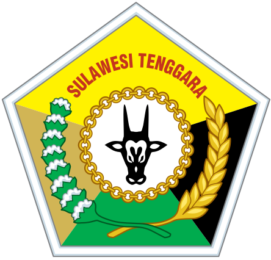

NIP. 19970209 202504 1 005
Peserta Latsar CPNS Golongan III
Angkatan II Kelompok III
Penata Kelola Sistem dan Teknologi Informasi
Pemerintah Provinsi Sulawesi Tenggara
Dr. KAFARUDIN, SE., MM.
NIP. 196908011994031014
UMMI NURUL RAHMI, S.T.
NIP. 198012162008042003

Badan Pendapatan Daerah Prov. Sultra memiliki intensitas rapat yang sangat tinggi. Efektivitas koordinasi saat ini masih terhambat oleh pengelolaan administrasi konvensional.
Absensi menggunakan kertas fisik rentan tercecer, rusak, dan memakan waktu untuk direkapitulasi.
Notulensi diketik tanpa database terpusat, menyebabkan lambatnya pencarian data historis.
Aplikasi E-Notulen mewujudkan pengarsipan paperless & real-time dukung Smart Governance.
Kuantitas SDM per Oktober 2025 yang masif menunjukkan perlunya otomatisasi pada sistem administrasi internal untuk mengimbangi frekuensi koordinasi.
| No. | Status Pegawai | Laki-Laki | Perempuan | Total | Keterangan Unit Kerja |
|---|---|---|---|---|---|
| 1 | PNS | 49 | 54 | 103 | Kantor Induk |
| 2 | CPNS | 4 | 5 | 9 | Kantor Induk |
| 3 | PPPK | 12 | 11 | 23 | Kantor Induk |
| 4 | Non ASN | 4 | 1 | 5 | Kantor Induk |
| Sub Total Kantor Induk | 69 | 71 | 140 | ||
| 5 | PNS | 103 | 101 | 204 | UPTB |
| 6 | CPNS | 0 | 0 | 0 | UPTB |
| 7 | PPPK | 23 | 18 | 41 | UPTB |
| 8 | Non ASN | 1 | 3 | 4 | UPTB |
| Sub Total UPTB | 127 | 122 | 249 | ||
| TOTAL KESELURUHAN | 196 | 193 | 389 | Total Pegawai |
Pengelolaan sarana dan prasarana (aset) perkantoran Bapenda Sultra yang menjadi modal dasar penerapan efisiensi operasional.
| No. | Klasifikasi / Jenis Aset | Nilai Aset (Rp) |
|---|---|---|
| Aset Tetap | 103.085.426.489 | |
| 1 | Tanah | 8.088.450.000 |
| 2 | Peralatan dan Mesin | 33.746.199.315 |
| 3 | Gedung dan Bangunan | 58.807.502.624 |
| 4 | Jalan, Irigasi dan Jaringan | 1.507.631.350 |
| 5 | Konstruksi dalam Pengerjaan | 935.643.200 |
| Aset Lainnya | 1.033.333.214 | |
| 1 | Aset Kondisi Rusak Berat/Hilang | 741.533.214 |
| 2 | Aset Tidak Berwujud | 291.800.000 |
| No | Tugas Fungsi | Kondisi Saat Ini | Kondisi Yang Diharapkan | Isu Teridentifikasi |
|---|---|---|---|---|
| 1 | Pengelolaan Database | Proses backup database sistem pendapatan masih manual/konvensional dan berisiko kehilangan data jika error. | Mekanisme backup otomatis dan berkala untuk menjamin keamanan data pendapatan. | Belum optimalnya sistem pengamanan dan backup database aplikasi. |
| 2 | Pengembangan Aplikasi | Pencatatan kehadiran (absen) dan notulensi rapat manual (kertas). Rekapitulasi lambat & arsip tercecer. | Sistem aplikasi digital terintegrasi, paperless, terdata real-time, rapi, dan mudah diakses. | Belum optimalnya pengelolaan administrasi pencatatan dan pengarsipan notulensi rapat. |
| 3 | Desain & Video | Informasi kegiatan dominan teks statis yang kurang menarik atensi masyarakat. | Konten informasi berbasis multimedia (video/grafis) yang edukatif dan estetik. | Belum optimalnya visualisasi konten edukasi pajak berbasis multimedia. |
Penilaian signifikansi menggunakan parameter Aktual (A), Problematik (P), Khalayak (K), dan Layak (L).
| No. | Daftar Isu Teridentifikasi | A | P | K | L | Total | Rank |
|---|---|---|---|---|---|---|---|
| 1 | Belum optimalnya sistem pengamanan dan backup database | 4 | 5 | 3 | 4 | 16 | III |
| 2 | Belum optimalnya pengelolaan administrasi pencatatan dan pengarsipan notulensi rapat | 5 | 5 | 5 | 5 | 20 | I |
| 3 | Belum optimalnya visualisasi konten edukasi pajak | 4 | 4 | 5 | 4 | 17 | II |
| Isu Utama Terpilih | Penyebab Isu | Kriteria | Total | Rank | ||
|---|---|---|---|---|---|---|
| U | S | G | ||||
| Belum optimalnya pengelolaan administrasi pencatatan dan pengarsipan notulensi rapat. | Belum adanya sistem aplikasi berbasis web yang memfasilitasi input absensi dan notulensi digital. | 5 | 5 | 5 | 15 | 1 |
| Belum optimalnya pemanfaatan teknologi penyimpanan awan (cloud) untuk backup data. | 4 | 4 | 4 | 12 | 2 | |
| Metode pencatatan dan penyimpanan arsip notulen masih dilakukan secara manual fisik. | 4 | 4 | 3 | 11 | 3 | |
"Digitalisasi Pengelolaan Notulensi Rapat Melalui Aplikasi E-Notulen Berbasis Web"
Solusi terintegrasi untuk menyatukan seluruh siklus proses absensi dan dokumentasi hasil rapat dalam satu platform terpusat.
Method: Penggantian pencatatan manual ke form elektronik.
Material: Pembuatan perangkat lunak khusus (custom software).
Technology: Implementasi sistem database relasional yang aman.
| Tahap | Kegiatan Pemecahan Isu Utama | Rincian Tahapan Pelaksanaan |
|---|---|---|
| 1 | Persiapan & Konsultasi | Menyiapkan materi → Menghubungi mentor → Memaparkan rancangan → Mencatat saran. |
| 2 | Pengumpulan Data | Mencari referensi aplikasi → Mempelajari alur manual → Menginventarisir fitur. |
| 3 | Merancang UI/UX & Database | Membuat ERD → Mendesain mockup → Asistensi desain dengan Tim IT. |
| 4 | Membuat Aplikasi (Programming) | Menyiapkan environment → Pemrograman Backend → Pemrograman Frontend. |
| 5 | Uji Coba & Perbaikan | Uji mandiri → Uji penerimaan (UAT) → Perbaikan bug/error. |
| 6 | Sosialisasi & Penerapan | Menyiapkan Manual Book → Sosialisasi internal → Pendampingan pengguna. |
| 7 | Evaluasi & Pelaporan | Menyebar survei → Menganalisis metrik → Melapor ke Mentor. |
| Kegiatan Utama | Implementasi Nilai Dasar ASN (Ringkasan) |
|---|---|
| 1. Persiapan | Pelayanan Cekatan siapkan materi. Akuntabel Data jujur. Kompeten Kualitas terbaik. Harmonis Hargai waktu. Loyal Dedikasi instansi. Adaptif Proaktif. Kolaboratif Terbuka pada masukan. |
| 2. Referensi | Pelayanan Referensi prima. Akuntabel Sumber legal. Kompeten Learning agility. Harmonis Hargai HAKI. Loyal Sesuai SOP. Adaptif Tren teknologi. Kolaboratif Berbagi resource. |
| 3. Desain UI/UX | Pelayanan User-friendly. Akuntabel Integritas data. Kompeten Skill relasi db. Harmonis Visual nyaman. Loyal Identitas instansi. Adaptif Desain fleksibel. Kolaboratif Asistensi user. |
| 4. Programming | Pelayanan Tampilan responsif. Akuntabel Kode tanpa celah. Kompeten Kinerja optimal. Harmonis Komen struktur rapi. Loyal Sekuriti data. Adaptif Framework modern. Kolaboratif Library tim. |
| 5. Uji Coba | Pelayanan Bebas error. Akuntabel Transparan catat bug. Kompeten Solusi akurat. Harmonis Terima kritik testern. Loyal Ekstra effort. Adaptif Cara alternatif. Kolaboratif Terima feedback. |
| 6. Sosialisasi | Pelayanan Ramah membimbing. Akuntabel Panduan valid. Kompeten Transfer ilmu teknis. Harmonis Empati pegawai gaptek. Loyal Taat instruksi. Adaptif Media digital. Kolaboratif Partisipasi aktif. |
| 7. Evaluasi | Pelayanan Orientasi perbaikan. Akuntabel Data objektif. Kompeten Analisa tajam. Harmonis Hargai responden. Loyal Tanggung jawab negara. Adaptif Survei e-form. Kolaboratif Share hasil analisa. |
| Tahapan Kegiatan Utama | Pelayanan | Akuntabel | Kompeten | Harmonis | Loyal | Adaptif | Kolaboratif | Total |
|---|---|---|---|---|---|---|---|---|
| 1. Persiapan dan Konsultasi | 4 | 4 | 4 | 4 | 4 | 4 | 4 | 28 |
| 2. Pengumpulan Data & Ref. | 3 | 3 | 3 | 3 | 3 | 3 | 3 | 21 |
| 3. Desain UI/UX & Database | 3 | 3 | 3 | 3 | 3 | 3 | 3 | 21 |
| 4. Membuat Aplikasi (Coding) | 3 | 3 | 3 | 3 | 3 | 3 | 3 | 21 |
| 5. Uji Coba & Perbaikan | 3 | 3 | 3 | 3 | 2 | 3 | 3 | 20 |
| 6. Sosialisasi & Penerapan | 3 | 3 | 3 | 3 | 3 | 3 | 3 | 21 |
| 7. Evaluasi dan Pelaporan | 3 | 3 | 3 | 3 | 3 | 3 | 3 | 21 |
| TOTAL PENERAPAN NILAI | 22 | 22 | 22 | 22 | 21 | 22 | 22 | 153 |
| Fase Kegiatan | Potensi Hambatan / Kendala | Solusi Preventif / Mitigasi |
|---|---|---|
| 1. Persiapan | Mentor/Pimpinan sibuk, sulit bimbingan tatap muka. | Komunikasi proaktif via WhatsApp, opsi asistensi virtual (Zoom). |
| 2. Pengumpulan Data | Referensi berbayar, jurnal terkunci, koneksi putus. | Akses jurnal open-source Perpusnas, forum komunitas IT. |
| 3. Desain UI/UX | Perbedaan selera antarmuka, revisi mayor di tengah jalan. | Sepakati batasan scope awal, buat 2 opsi mockup (A/B Testing). |
| 4. Programming | Laptop rusak, bug kode terlalu rumit. | Disiplin backup kode ke Cloud harian, kolaborasi dengan tim IT. |
| 5. Testing Aplikasi | Server overload, penemuan celah kebocoran data. | Lakukan pengujian bertahap per modul, siapkan server cadangan. |
| 6. Sosialisasi | Resistensi pegawai senior yang gagap teknologi. | Pendekatan interpersonal persuasif, sediakan panduan visual. |
| 7. Evaluasi | Partisipasi pengisian survei kepuasan sangat rendah. | Terapkan metode jemput bola, broadcast reminder di WA Grup. |
| Nilai Dasar Bela Negara | Indikator Sikap / Perilaku | Implementasi Aksi (Habituasi) |
|---|---|---|
| 1. Cinta Tanah Air | Menjaga lingkungan & Bangga produk lokal. | Membawa botol minum, hemat air, memakai batik daerah. |
| 2. Sadar Bernegara | Disiplin bekerja & Menghormati keanekaragaman. | Hadir tepat waktu, interaksi tanpa SARA, bahasa baku. |
| 3. Setia pada Pancasila | Meyakini dasar negara & Musyawarah mufakat. | Beribadah tepat waktu, aktif sumbang saran rapat. |
| 4. Rela Berkorban | Menolong sesama & Menyumbang tenaga ekstra. | Membantu rekan yang gaptek, rela lembur menyelesaikan tugas. |
| 5. Kemampuan Awal | Sehat raga & Peka kecerdasan emosional. | Rutin stretching saat coding, manajemen stres saat error. |
Dilaksanakan selama 30 Hari Kerja Masa Habituasi.
| Tahapan Kegiatan Utama | Timeline (Minggu Ke-) | ||||
|---|---|---|---|---|---|
| M1 | M2 | M3 | M4 | M5 | |
| 1. Persiapan dan Konsultasi Aktualisasi | |||||
| 2. Pengumpulan Data & Referensi API | |||||
| 3. Merancang Desain UI/UX & Database | |||||
| 4. Membuat Aplikasi (Coding) E-Notulen | |||||
| 5. Uji Coba (Testing) & Perbaikan Error | |||||
| 6. Sosialisasi dan Penerapan Aplikasi | |||||
| 7. Evaluasi dan Penyusunan Laporan Akhir | |||||
SEKIAN DAN